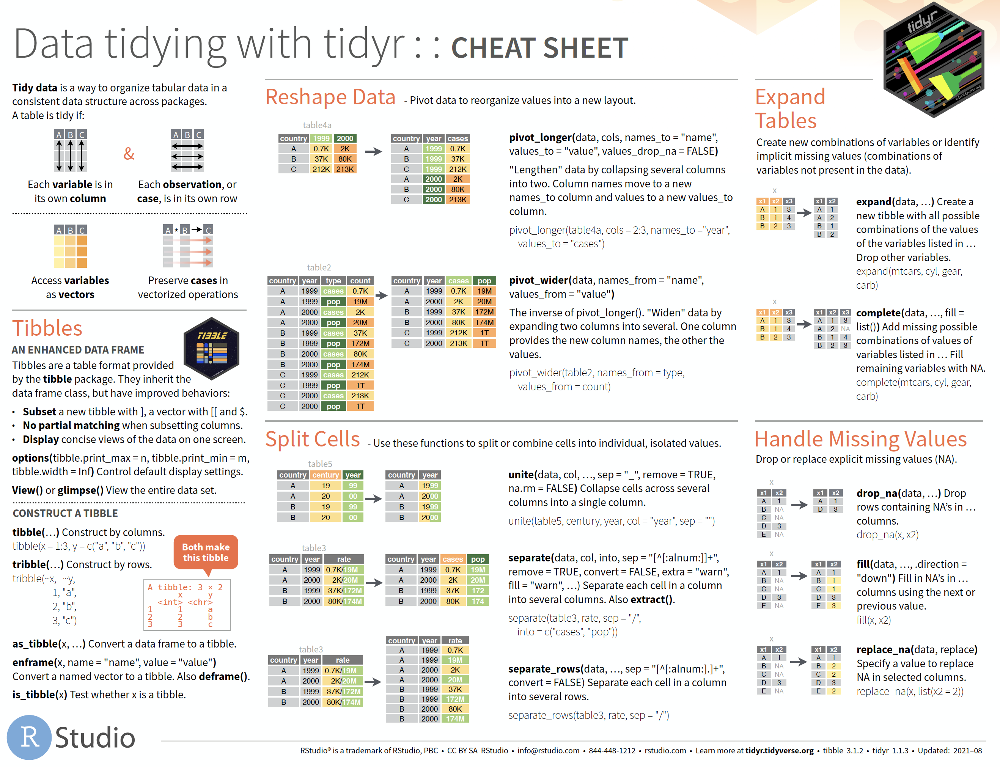
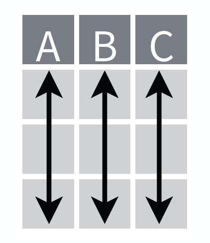
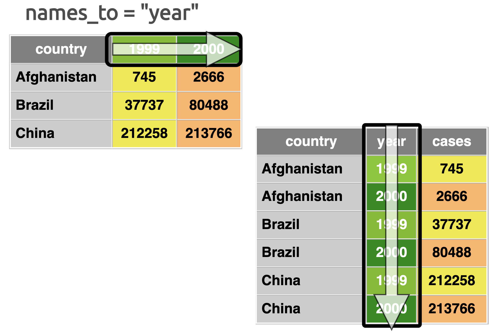
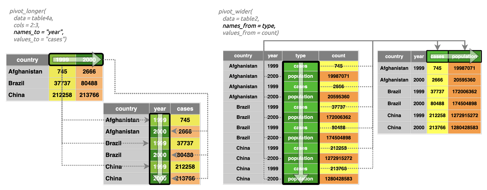
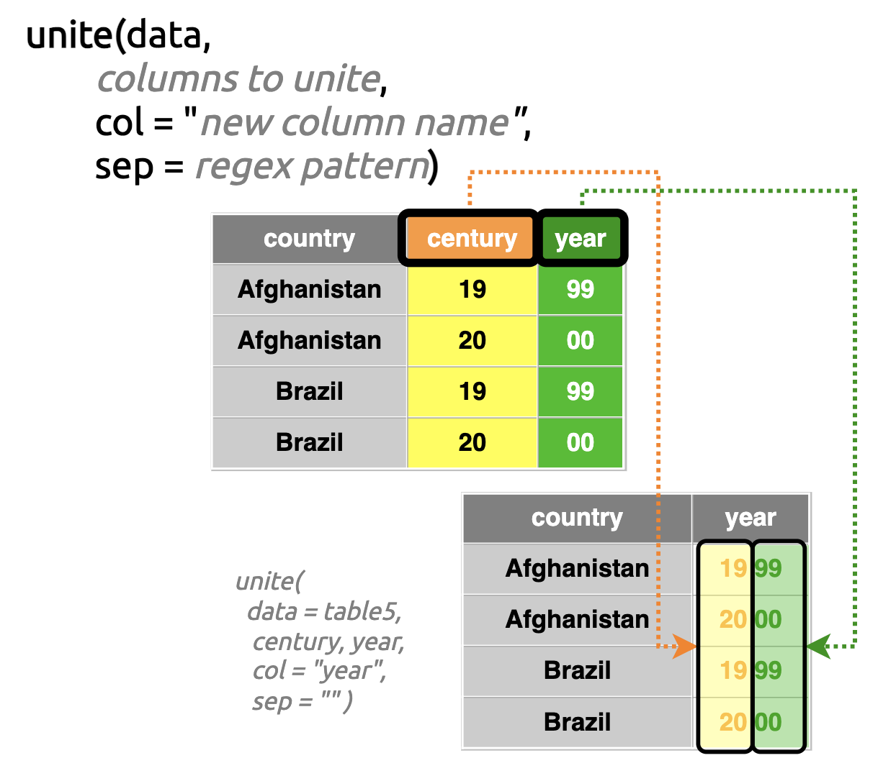
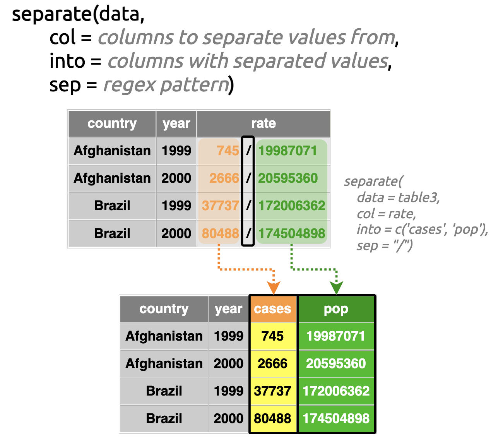

Link to tidyr
website
Link to
cheatsheets
The cheatsheet (part 1)

“The
tidyrpackage provides a framework for creating and shaping tidy data, the data format that works the most seamlessly with R and thetidyverse.
Outline
Below is an outline of the topics on the front page of the
tidyr cheatsheet (access the full cheatsheet here).
- A definitions of tidy data
- standardizing the way you store data
- standardizing the way you store data
- An overview of the
tibblepackage- modern
data.frames
- modern
- Reshaping data
- moving rows -> columns, or columns -> rows
- moving rows -> columns, or columns -> rows
- Splitting cells
- separating the contents of cells
- separating the contents of cells
- Expand tables
- filling cells with all possible combinations of
values
- filling cells with all possible combinations of
values
- Missing values
- what to do when the data aren’t there
This tutorial covers the front page of the tidyr
cheatsheet, which includes various functions for reshaping (‘tidying’)
data in RStudio. The goal of this tutorial is to show what the contents
of the cheatsheet look like in your RStudio console.
Below we install and load the packages:
install.packages(c("tidyr", "dplyr", "tibble"))
library(tidyr)
library(dplyr)
library(tibble)Tidy data
Tidy data is a central concept in the tidyverse. Most of
the packages in the tidyverse are built to work with data
in a tidy format, so having a firm grasp on this concept will make life
easier. There are three main tenets of tidy data:
- Each column contains a single variable
- Each row contains a single observation
- Values are at the intersection of variables and observations
These tenets make data transformation, visualization, modeling easier in R because most of R’s functions are vectorized (meaning they work on vectors).
Variables, observations, and values
The third tenet is a logical extension from first two 1 & 2, as noted in this quote from the author of the tidy data paper by Hadley Wickham,
“Values are organized in two ways. Every value belongs to a variable and an observation.” - Hadley Wickham, 2014
At bottom, a dataset contains values-it’s how we organize the values into variables and observations that determines if a dataset it tidy.
Columns (variables)
Columns contain variables, which are measurements or attributes that can have multiple values (i.e., they ‘vary’). These are things like countries, time periods, stock prices, political affiliation, temperatures, etc.

Rows (observations)
Rows hold observations, which represent a unit of analysis. These are the things, places, people, years, etc., which are measured.

Values
The values are the single instance, number, category or classification of a variable and observation.

Tibbles
A tibble is the tidyverse version of a
data.frame, R’s fundamental data structure.
tibbles are rectangular data objects–similar to
spreadsheets–but they have a few distinct characteristics that make them
a little different than data.frames.
tibble functions
We’ll cover three functions for creating tibbles:
tibble::tibble()
tibble::tribble()tibble::enframe()
We’re also going to cover how to convert a data.frame to
a tibble using the tibble::as_tibble()
function.
tibble::tibble()
Use tibble::tibble() and c() to create the
tibble below where column x contains a numeric vector with
values 1-3, and y contains a character vector with the
letters "a", "b", "c".
# create tibble below with:
# x is 1, 2, 3
# y is "a", "b", "c"# create tibble below:
tibble(x = c(1, 2, 3),
y = c("a", "b", "c"))tibble() also makes tibbles with existing vectors.
Create nums and chars below, and assign
num to column x and chars to
column y.
nums <- # create nums with values 1, 2, and 3
chars <- # create chars with values "a", "b", and "c"
tibble(x = ,
y = )nums <- c(1, 2, 3)
chars <- c("a", "b", "c")
tibble(x = nums,
y = chars)tibble::tribble()
Creating a tibble (by rows)
The tribble() function allows us to create a tibble ‘by
rows’. When using tribble(), the column names must be
preceded by the tilde (~) character.
Create the tibble below with columns x and
y.
# make x numeric and y character
tribble(, ,
1, "a",
2, "b",
3, "c")# make x numeric and y character
tribble(~x, ~y,
1, "a",
2, "b",
3, "c")If you have white space or special characters in your dataset, you
can place the name in backticks
(`).
Create the tibble below using the following column names:
Column X and Column Y
# make `Column X` numeric and `Column Y` character
tribble(, ,
1, "a",
2, "b",
3, "c")tribble(~`Column X`, ~`Column Y`,
1, "a",
2, "b",
3, "c")tibble::enframe()
If you have a named vector or list, you can convert it to a
data.frame using enframe(), In the code block
below is a named vector, five_babies, which comes from the
babynames
package.
Print five_babies and inspect it with str()
or dput()
# view five_babies
five_babiesUse the enframe() function to convert
five_babies into a tibble.
# use enframe() on five_babies
enframe(five_babies)Converting to tibble
When converting data.frames to tibbles, use
the tibble::as_tibble() function.
In the code block below we’ve loaded the smiths data
from the tidyr package as smiths_tbl. Print
the structure (str()) of smiths_tbl below:
# print 'smiths_tbl' to the console
str(____)str(smiths_tbl)We’ve also loaded these data as a data.frame as
smiths_df. Print the structure (str()) of
smiths_df below:
# print 'smiths_df' to the console
str(____)str(smiths_df)Note the differences in the tibble and
data.frame outputs:
tibble:
# tibble [<rows> × <cols>] (S3: tbl_df/tbl/data.frame)
# $ <variable>: <class/mode> [<start>:<end>] "value 1" "value 2"
# $ <variable>: <class/mode> [<start>:<end>] 1 2data.frame:
# 'data.frame': <# rows> obs. of <# cols> variables:
# $ <variable>: <class/mode> "value 1" "value 2"
# $ <variable>: <class/mode> 1 2In the code block below, convert smiths_df to a
tibble using tibble::as_tibble().
# drop 'smiths_df' in the as_tibble() function
tibble::as_tibble()# drop 'smiths_df' in the as_tibble() function
tibble::as_tibble(smiths_df)Lists with a special kind of class…
tibbles are lists, but special lists. Like
data.frames, each vector in a tibble must have
equal lengths. Click Run Code and see what happens if
we try to create a tibble with vectors of unequal lengths:
tibble(x = 1:2, # too short!
y = c("a", "b", "c"))What does “Only values of size one are recycled” mean? It
means if x is a single value, it will be repeated for the
length of y—which is why the code below works (Click
Run Code):
tibble(x = 2, # values of size one
y = c("a", "b", "c"))Reshape Data
“Pivot data to reorganize values into a new layout.”
Two of the most important functions to learn from tidyr
are pivot_longer()
and pivot_wider().
Both functions help you move columns to rows (and vice versa).
pivot_longer()
Datasets with a single variable in multiple columns are referred to
as having a ‘wide’ format. Click Run Code to see the
example table4a below:
table4aWide to long
The cases are stored in two year columns
(1999 and 2000). pivot_longer()
can convert table4a from a ‘wide’ to a ‘tidy’ format.
In the code block below:
- place
table4ain thedataargument
- numerically index the
cols(using2:3)
- move the years to
"year"the cases to"cases"
tidyr::pivot_longer(
# enter table4a dataset
data = ,
# column range 2-3
cols = ,
# new 'year' column
names_to = "",
# new 'cases' column
values_to = "")tidyr::pivot_longer(
# enter table4a dataset
data = table4a,
# column range 2-3
cols = 2:3,
# new 'year' column
names_to = "year",
# new 'cases' column
values_to = "cases")See the diagrams below for a better understanding of how
names_to and values_to work:
names_to
The names_to is a string (in quotes), and it’s what we’d
like to call our new variable that will “contain the column names of
the variables we’re specifying in cols.”

values_to
The values_to argument is the name of the new variable
that will “hold the values stored in the cells beneath the columns
we’ve specified in cols.”

pivot_wider()
Below is the table2 data from the tidyr
package.
table2Tidy data checklist
Do these data currently meet the definition of ‘tidy’?
variables in columns?
observations in rows?
cells contain values which are at the intersection of the variable/observation?
We’re going to restructure table2 by shifting the
type variable into separate columns (i.e., one column for
cases, and another for population).
In the code block below:
Place
table2in thedataargumentThe
typevariable values contains the names of our new columns, so we’ll place it in thenames_fromargumentThe
countvariable contains values for each level oftype, so we’ll place this in thevalues_fromargument
# move the names from 'type' and the values from 'count' in 'table2'
tidyr::pivot_wider(
data = ,
names_from = ,
values_from = )# move the names from 'type' and the values from 'count' in 'table2'
pivot_wider(
data = table2,
names_from = type,
values_from = count)The names_from and values_from arguments in
pivot_wider() are similar to the names_to and
values_to arguments in pivot_longer(). The
diagrams below show how the work in more detail:
names_from
The names_from column should contain values that are
currently being used to index or arrange the values in the long/tidy
dataset.
values_from
The values_from column is the variable holding the
values we’d like to be placed in the rows under each corresponding
names_from column.

Note that neither of these columns need to be in quotes.
Reshaping your columns and rows is a common activity when wrangling
your data. pivot_longer() and pivot_wider()
come with multiple arguments for more complicated reshaping.
Additional arguments
Consider the example below from a subset of data from the billboard
dataset. These data have weekly rankings for artists and songs from
2008. Use the code block below to explore the bbwk2 data
with head(), or tail().
# view bbwk2
bbwk2Data aren’t necessarily collected or stored in ways that make them
easy for analysis or visualization. If we were collecting billboard
rankings in a spreadsheet structured like bbwk2, that
process might take the following steps:
- wait until the new rankings come out each week
- open up our the
bbwk2in a spreadsheet
- create a new
wkcolumn
- enter the new rankings
This would result in dataset that would look something like the
bbwk3 in the code block below:
# view bbwk3
bbwk3However, when it’s time to analyze bbwk3, we’d want to
reshape these data into a long format without losing any
information.
Fortunately, pivot_longer() has options for making sure
the original structure of bbwk3 is retained after reshaping
the data. In the case of bbwk3, the missing value for
"I Know" by "Tuesday" needs to be dropped when
we create our rank column.
In the code block below:
- The
colsargument should usestarts_with()from thetidyselectpackage to identify all columns starting with"wk"
- These columns should be reshaped into the
"week"column with thenames_toargument
- Use
names_prefixto shave the"wk"off the week value in our newweekcolumn - The values should be stored in the
"rank"variable (withvalues_to)
- We want to make sure we drop any songs that don’t carry over from
week-to-week, so we set
values_drop_natoTRUE
# reshape the bbwk3 into a tidy format
pivot_longer(data = bbwk3,
cols = ,
names_to = ,
names_prefix = ,
values_to = ,
values_drop_na =
)pivot_longer(data = bbwk3,
cols = starts_with("wk"),
names_to = "week",
names_prefix = "wk",
values_to = "rank",
values_drop_na = TRUE
)We can see this removed the missing value and there are only two
weeks of ranks for "I Know" by "Tuesday".
names and values as pairs
In previous versions of tidyr, we used
spread() and gather() instead of
pivot_longer() and pivot_wider(). These
functions referred to names_to/names_from and
values_to/values_from as key and
value, and I’m including them here because I found them
quite helpful in understanding the mechanics of reshaping data:
The keys (names)
- The keys (or
names_toandnames_from) are the columns used to index the cell values:- in
pivot_longer()the names need to shift from a horizontal a vertical orientation
- in
pivot_wider()the names need to shift from a vertical to a horizontal orientation
- in

values
- The values (
values_toandvalues_from) are the cell contents linked to the index provided in thenames_to/names_from:- in
pivot_longer()the values shift from two existing columns to a single column (indexed on thenames_tocolumn)
- in
pivot_wider()the values shift from a single column into new columns based on the distinct values stored in thenames_fromvariable.
- in

review pivot_longer() &
pivot_wider()


Be sure to check out the help files for pivot_longer()
and pivot_wider().
Split Cells
“Use these functions to split or combine cells into individual, isolated values.”
In this section, we’ll combine column values using
tidyr::unite(), then we’ll split and distribute cell values
across columns with tidyr::separate()) (and down
rows using tidyr::separate_rows()).
unite()
The tidyr::pivot_ functions reshape data, shifting
columns to rows (and vice versa). However, the
tidyr::unite() and tidyr::separate() functions
allow us to isolate and manipulate the existing column values into new
variables.
If you have variable values spread across multiple columns (like the
subset of tidyr::table5 below), you can use
tidyr::unite() to combine these values into a single
column.
table5As we can see, century and year could be
combined into a single four-digit year column.
In the code block below:
- The new column name (
"year") is provided in thecolargument (in quotes)
- Designate a character string to separate the values with the
separgument
# enter the new "year" column and use an empty space ("") to separate the values
tidyr::unite(data = table5,
# columns to unite
century, year,
# new column name
col = ,
# what to separate them by
sep = )# enter the new "year" column and use an empty
# space ("") to separate the values
unite(
data = table5,
# columns to unite
century, year,
# new column name
col = "year",
# what to separate them by
sep = ""
)unite() review
Below is a diagram similar to the one in the original cheatsheet, but with the actual values/column names:

separate()
Sometimes you’ll encounter datasets with two variables contained in
the same column(like a ratio or fraction). The
tidyr::separate() function will split the numbers into
individual columns (for numerator and denominator).
See an example of this in the subset of tidyr::table3
below:
table3In the code block below:
- The
colargument is the column we want to split apart (rate)
intoshould be the names of the columns we want the separate pieces to fall into (casesandpop)
- The
separgument should be a regular expression pattern we want to split the pieces on ("/")
separate(data = table3,
# what column to break apart
col = rate,
# columns the new values should end up in
into = c(" ", " "),
# what to separate on
sep = " ")separate(
data = table3,
# what column to break apart
col = rate,
# columns the new values should end up in
into = c('cases', 'pop'),
# what to separate on
sep = "/")separate() review
Below is another diagram for separate with slightly more details than the one presented in the cheatsheet.

BONUS (tidyr::extract())
regular expression with capturing groups
tidyr::extract() is mentioned in the cheatsheet, but
we’re going to include an example here because it’s a natural extension
from the tidyr::separate() function. We’ll tackle the same
issue we dealt with in the previous section using table3
(splitting the rate column into cases and
pop).
Checking a regex with stringr::str_view()
We’ll cover regular expressions in more depth in the
stringr cheatsheet, but for now we’ll check our
regex pattern matches in the rate variable
using stringr::str_view():
We define each group using () and
/ and
"[[:alnum:]]+" (which matches one or
more alphanumeric characters):
str_view(string = table3$rate, "([[:alnum:]]+)")
## [1] │ <745>/<19987071>
## [2] │ <2666>/<20595360>
## [3] │ <37737>/<172006362>
## [4] │ <80488>/<174504898>
## [5] │ <212258>/<1272915272>
## [6] │ <213766>/<1280428583>We can see this pattern matched the numerator in rate.
When we include the second group:
"/([[:alnum:]]+)"
str_view(string = table3$rate, "/([[:alnum:]]+)")
## [1] │ 745</19987071>
## [2] │ 2666</20595360>
## [3] │ 37737</172006362>
## [4] │ 80488</174504898>
## [5] │ 212258</1272915272>
## [6] │ 213766</1280428583>We see it’s matching the denominator.
The full pattern ("([[:alnum:]]+)/([[:alnum:]]+)")
creates two groups of numbers (numerator and denominator) and places
these values into the new variables specified by into.
Use the code block below to extract the numerator and denominator
from rate into "cases" and
"pop":
- Place
table3in thedataargument
- The
colargument is the column we want to extract the pattern from
- The
regexargument is the regular expression pattern that we just built above (capable of creating “groups”)
- The groups produced by the regex pattern will make up the values in
the new columns we supply to the
intoargument
extract(table3,
# what column to extract the values from
col = ,
# where the new values should end up
into = ,
# regular expression that creates groups
regex = "([[:alnum:]]+)/([[:alnum:]]+)")extract(table3,
# what column to extract the values from
col = rate,
# where the new values should end up
into = c('cases','pop'),
# regular expression that creates groups
regex = "([[:alnum:]]+)/([[:alnum:]]+)")extract() review
We’ve created a new diagram below (similar to the previous) that
demonstrates how extract() works.

separate_rows()
separate_rows() works similar to
separate(), but instead of spreading the values across the
columns (the into argument), it distributes the values down
the rows.
In the code block below:
- Place
table3in thedataargument
- Separate the
ratecolumn by bows on/
separate_rows(data = table3,
, # column to separate values below
sep = "")separate_rows(
data = table3,
# column to separate values below
rate,
sep = "/")separate_rows() review
The previous functions operate on existing columns and
create new columns, so they won’t create any new rows in the
dataset. This isn’t true for the separate_rows()
function.
Handle Missing Values
“Drop or replace explicit missing values (NA).”
Missing data are designated as NA in R. Sometimes data
are missing in the original dataset, but sometimes we have missing
values as the result of reshaping or restructuring our data. We’re going
to cover three tidyr functions for dealing with missing
values: drop_na(), fill(), and
replace_na().
drop_na()
We’ve recreated the example dataset from the cheatsheet as
x_tbl below:
Use the code block below to explore x_tbl
# explore the x_tbl tibble
drop_na() will remove the rows with missing values.
drop_na(data = )drop_na(data = x_tbl)This function is great if we don’t want any missing observations.

fill()
If we don’t want to remove the entire row, we can use
tidyr::fill() to replace the missing values with the column
value’s from above or below. We’ve loaded the X table again
as x_tbl:
In the code block below:
- Place the
x_tbldataset in the data argument
- Fill the missing values in the
x2column with the values in the cells above
fill(data = , )fill(data = x_tbl, x2)We can see the missing values in x2 have been filled
with the contents from the values above. The .direction
argument controls which values are used to replace the missing values.
"down" (the default) will fill the missing values with the
contents above, and "up" will fill the missing values with
the contents from below.
We’ve loaded another example dataset, profits, in the
code block below.
# explore profitsThe year variable has missing values, but we can see
these are linked to the other two variables (quarter and
profits).
In the code block below:
- Place the
profitsdataset in the data argument
- Enter the column we want to fill the missing values in
(
year)
- Change the
.directionargument to fill the missing with the cell contents below
# fill up!
fill(data = ,
,
.direction =
)# fill up!
fill(data = profits,
year,
.direction = 'up')fill(data =, .direction = 'down') review
The diagrams below shows how the fill() argument works
with the default .direction = "down"argument.
fill(data =, .direction = 'up') review
replace_na()
If we need to control what values we want to replace the missing
values with, we can use tidyr::replace_na(). This function
takes a list of values, written as:
list(variable/column = value to replace NAs)
We’ve loaded the X table as x_tbl in the
code below:
In the code block below:
- Place
x_tblin the data argument
- In the
replaceargument, create alist()with the following contents:x2 = 2
replace_na(data = ____,
replace =
list(__ = _))replace_na(data = x_tbl,
replace =
list(x2 = 2))These functions are often used together to deal with different types
of missing values. For example, consider the scores data
below:
# explore scores
In scores, a missing value means there was no
score for that particular year. We will use
replace_na() to make sure a 0 is included for
any future calculations.
In the code block below:
- Place
scoresin thedataargument
- Use the
replaceargument to replace the missing values inscorewith0L
replace_na(data = ,
replace = list( = ))replace_na(data = scores,
replace = list(score = 0L))Now that we’ve replaced the missing scores with zeros,
we could create a running total variable from
score (which we will cover in the dplyr
tutorial).
Putting it all together
We’re going to recreate the following tibble using the
appropriate functions:
In the code block below:
- Use
replace_na()to replace thescorewith0L
- Use
fill()to fill thetotalcolumn"down"
- Use
replace_na()againtotalwith0L
# replace missing values in cum_scores
replace_na(data = cum_scores,
# replace score with zeros
replace = list(____ = 0L)) |>
# fill total column down
fill(____, .direction = "____") |>
# replace total with zeros
replace_na(replace = list(____ = 0L))# replace missing values in cum_scores
replace_na(data = cum_scores,
# replace score with zeros
replace = list(score = 0L)) |>
# fill total column down
fill(total, .direction = "down") |>
# replace total with zeros
replace_na(replace = list(total = 0L))review replace_na()
Review the diagram below on the replace_na()
function:
Expand Tables
“Create new combinations of variables or identify implicit missing values (combinations of variables not present in the data).”
Incomplete data are usually missing a particular combination of values and/or observations. Recall earlier we learned that, “every value belongs to a variable and an observation.”. These following functions help us identify and/or complete these incomplete values.
expand()
The tidyr cheatsheet also uses another X
dataset for this section (which we’ve created again below as
x_tbl).

Use the code block below to explore x_tbl:
# explore the x_tbl dataexpand() will create all possible combinations of values
of whatever dataset and variables we specify.
In the code block below:
- Place
x_tblin thedataargument
- Expand
x_tblto include all possible combinations of variablesx1andx2.
expand(data = )expand(data = x_tbl, x1, x2)The expand() function returns a tibble with
all the possible combinations of values for whichever variables we
provide after the data argument (in this case
x1 and x2).
You can check the new combinations of values that have been added
using anti_join()
and distinct()
from the dplyr package.
dplyr::anti_join(
# assign the expand() command above to 'x'
x = expand(data = ____, __, __),
# original distinct values
y = dplyr::distinct(x_tbl, x1, x2)) dplyr::anti_join(
# assign the expand() command above to 'x'
x = expand(data = x_tbl, x1, x2),
# original distinct values
y = dplyr::distinct(x_tbl, x1, x2)) This tells us the missing combinations of values for x1
and x2. We’ll cover joins and more in the data manipulation
tutorial.
complete()
The complete() function is somewhat similar to
expand(), but where expand() returns all
possible combinations of the variables we provide,
complete() also returns the entire input tibble and
converts “implicit missing values into explicit missing
values.”
Let’s see how to use complete by looking at the example from the
cheatsheet (loaded as x_tbl).
We can see there are three variables, each with two possible values.
If we provide the same two columns to complete() that we
did to expand(), we can see the difference below:
complete(data = , )complete(data = x_tbl, x1, x2)As we can see from the output above, complete() created
a tibble with all possible combinations of x1 and
x2 (like expand()), but it also included the
x3 column in the output (with a missing value
(NA) where the new row was created for the missing
combination of x1 and x2).
Putting it all together
Consider the example data below, hiphop90s:
The hiphop90s table shows hip-hop albums for two artists
from year 1996-1998. If we wanted to fill in the missing year for the
Wu-Tang Clan, how would we do it with
complete()?
In the code block below:
- Place
hiphop90sin the data argument
- Complete with the
yearandartistvariables
complete(data = ____, ____, ____)complete(data = hiphop90s, year, artist)We can also use the fill argument in
complete() to replace any missing values we generate.
Use the code block below to replace the missing values in
albums with zeros:
complete(data = ____,
year, artist,
fill = list(____ = 0L))complete(data = hiphop90s,
year, artist,
fill = list(albums = 0L))We can also use complete() to add values that aren’t in
the dataset. What if we wanted to include "Dr. Dre" in our
hiphop90s dataset, even though he didn’t release an album
until 1999?
We can provide the new values we want for artist as a
character vector (in this case we want to add "Dr. Dre" to
the existing values) and use fill to replace the missing
values with zeros.
complete(hiphop90s,
year,
# add Dre to the list of artists
artist = c("2Pac", "Wu-Tang Clan", ),
# replace missing values with 0L
fill = list())complete(hiphop90s,
year,
# add Dre to the list of artists
artist = c("2Pac", "Wu-Tang Clan", "Dr. Dre"),
# replace missing values with 0L
fill = list(albums = 0L))expand() & complete() review
expand() will return a tibble all possible combinations
of values only for the variables we provide,

…while complete() will return a tibble with all possible
combinations of values for the variables we provide, plus any other
columns in the original tibble. complete() will
also create combinations of values not found in the original tibble.
Recap
There you have it!
We’ve covered tibbles, reshaping data with
pivot_ functions, splitting cells with unite()
and separate() (and the bonus extract()),
handling missing values with drop_na(),
fill(), replace_na(), and filling in values
with expand() and complete()
Next up–page 2!